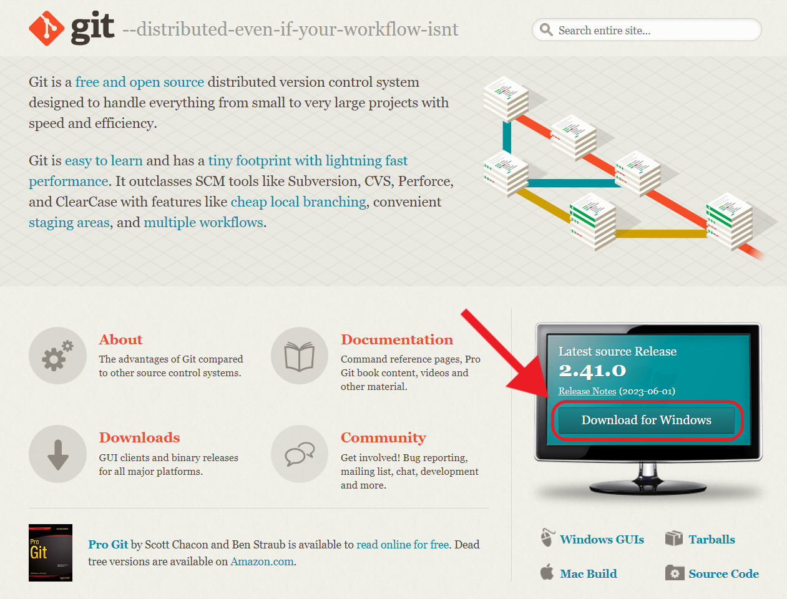
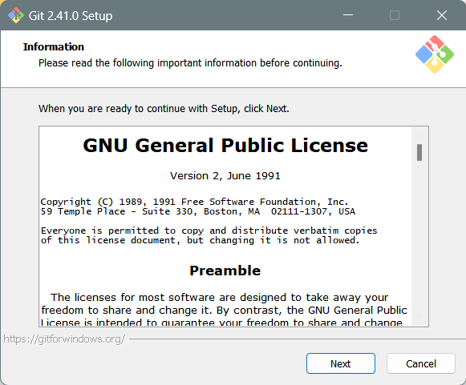
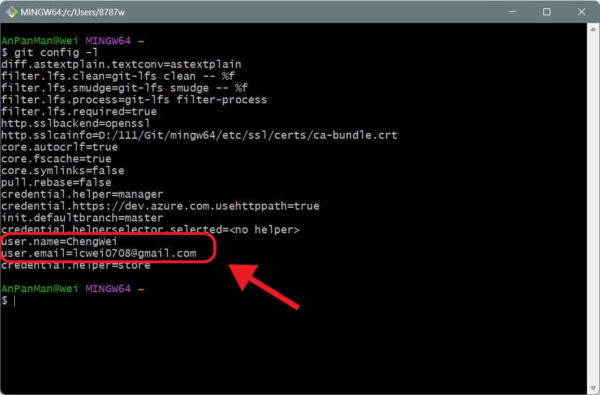
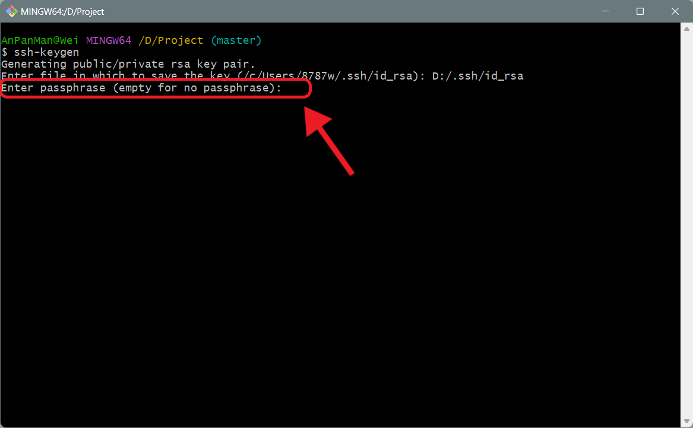

Installation
| Category | Git |
|---|---|
| References | References |
| Created | June 15, 2023 |
| Views |
安裝流程
前往Git官網下載
前往Git官網點擊Download按鈕。

執行安裝檔
執行安裝檔後，基本都採預設值就好，一路點Next直到安裝完成。

開啟Git Bash
安裝完成後開啟資料夾中的git-bash.exe，通常都會使用Git Bash來完成Git的操作指令。

基礎設定
設定Username、Email
初次使用Git，最重要的就是設定username以及email。
- 使用 --global 的參數，表示對於所有的Git Project都會採用這組預設值。
Shell
git config --global user.name "ChengWei"git config --global user.name <Username>
Shell
git config --global user.email "lcwei0708@gmail.com"git config --global user.email <Email>
查看Git的設定內容
Shell
git config -l

查看剛剛設定的Username、Email
建立SSH Key
Shell
ssh-keygen生成一對SSH的公鑰與私鑰

輸入金鑰生成的路徑，預設為C://Users/user/.ssh/id_rsa，可以不輸入直接按Enter

設定在使用金鑰時要輸入的密碼，會要求輸入兩次，可以不設定直接按Enter

生成完之後會產生兩個檔案，有.pub的是公鑰
Shell
cat id_rsa.pub查看公鑰
將SSH Key設定到GitHub上

到GitHub的Setting → SSH and GPG keys → 點擊New SSH Key按鈕

將剛剛查詢到的公鑰貼到這裡，之後點擊Add SSH Key